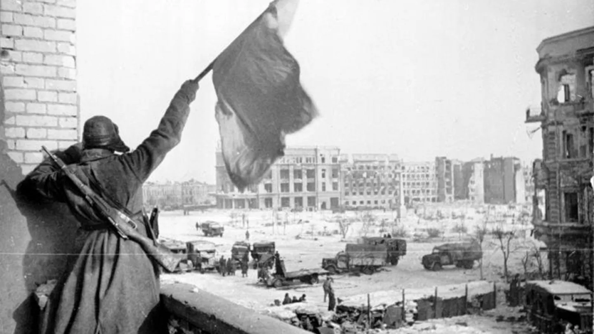

Résumé de la Bataille de Stalingrad
La Bataille de Stalingrad, l'un des affrontements les plus décisifs de la Seconde Guerre mondiale, s'est déroulée du 17 juillet 1942 au 2 février 1943 dans la ville de Stalingrad (aujourd'hui Volgograd).
- Contexte : Cette bataille faisait partie de l'offensive allemande en Union soviétique, connue sous le nom d'Opération Barbarossa, visant à s'emparer des ressources vitales et à affaiblir l'Union soviétique.
- Déroulement :
- Juillet 1942 : Début de la bataille avec l'avancée allemande vers Stalingrad.
- Août 1942 : Les combats s'intensifient dans la ville, marqués par des affrontements acharnés rue par rue.
- Novembre 1942 : L'Armée rouge lance une contre-offensive, encerclant les forces allemandes à Stalingrad.
- Février 1943 : Capitulation des forces allemandes encerclées, marquant la fin de la bataille.
- Issue : Victoire décisive de l'Union soviétique, marquant un tournant majeur dans la guerre en faveur des Alliés.
- Importance : La bataille de Stalingrad a été un point de bascule dans la guerre, stoppant l'avancée allemande en Union soviétique et initiant une série de victoires soviétiques qui mèneront finalement à la défaite de l'Allemagne nazie.
